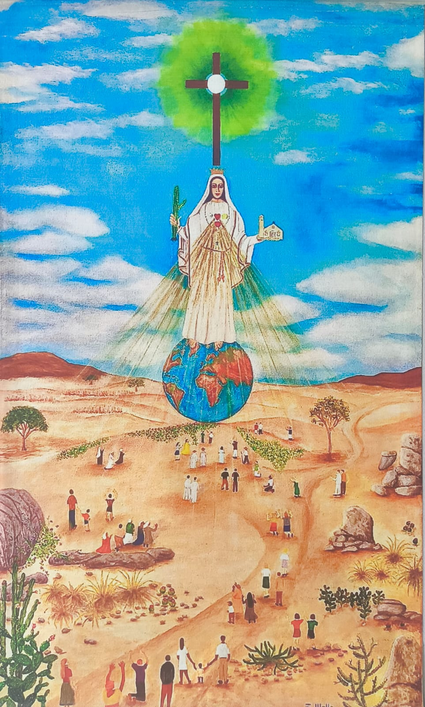

Quem Somos?
A Pequena e Grande Família de Nossa Senhora surgiu em 8 de outubro de 1989, a partir das experiências místicas de Reinaldo Galvão, chamadas locuções interiores. Desde então, o grupo se dedica à oração, à conversão e à vivência do amor de Deus, atendendo ao apelo de Nossa Senhora por um mundo mais espiritual e fraterno.
Saiba Mais

Fale Conosco
Entre em contato conosco pelo WhatsApp e saiba mais sobre nossos encontros, produtos e atividades.
Conversar pelo WhatsApp